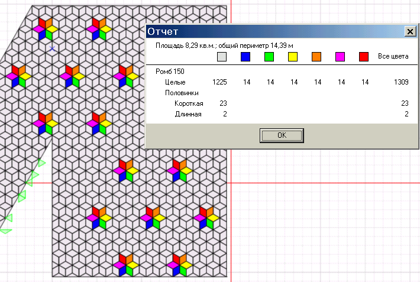

Первая строка отчета - это его площадь и длина периметра, включая периметр внутренних, созданных специально пустот (под клумбы, например).
Далее в столбцах приведены цифры целых плиток и половинок, с разделением по цветам.
Первый столбец - основной цвет, в строках целые плитки, во второй и последующих - половинки каждого вида.
Второй столбец - другой цвет и т. д.
В последнем столбце плитки и половинки каждого вида всех цветов в сумме.
По первому приведенному примеру можно сказать, что целых серых плиток нужно 804 шт. Серых половинок, образованных делением плитки поперек - 28 шт. Серых половинок, образованных делением плитки вдоль - 1 шт. Те же цифры для зеленых плиток - 386 целых, продольных половинок - 22 шт, поперечных - 14 шт.
Плиток всех цветов - 1190 целых, продольных половинок - 50 шт, поперечных - 15 шт.

Когда цветов больше, отчет соответственно изменяется (прибавляются столбцы).

Если узор составлен из плиток нескольких типов, после перечисления целых плиток и половинок одного типа, следуют другие типы. В примере красными линиями соединены цифры с соответствующими плитками и половинками.
Иногда бывает непросто понять - почему именно такое количество половинок, где и как они расположены. На панели инструментов есть кнопка
К проекту можно написать комментарий. Меню Участок -> Комментарий . Здесь можно вписать что угодно, например адрес заказчика.